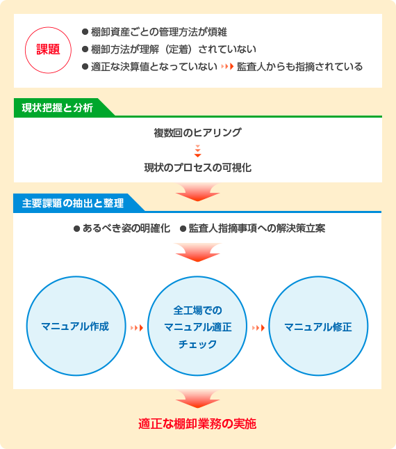

棚卸業務の適正実施に向けてコンサルティングを決断！
棚卸は適正な決算を行う上で重要な業務ですが、お客さまでは作業が煩雑で社員に浸透していないため処理を誤るケースもあり、監査人から指摘を受け、早急に業務改善を実施する必要がありました。会社特有の業務に沿った経理実務の可視化（マニュアルの作成）に向けてコンサルティングを決断された事例です。
お客さま情報
出版印刷関係B社様 売上高200億円 従業員数450名
委託業務内容
経理・財務関連
（棚卸資産管理の適正化）

当初の課題認識
お客さまでは棚卸資産の日々の受払管理や実地棚卸方法が多様な製品種別ごとに異なっているため、棚卸業務が煩雑となっていた。また、効率的な工場運営を図るため、最小限の人員配置だったが、その社員に棚卸業務の重要性が浸透していなかったことにより管理方法等を誤り、本来一致するべき実地棚卸の実数と帳簿の残高、決算計上の数値が一致しない状況にあった。このことについて監査人より指摘を受け、早急な改善が必要となった。適切な決算を実施できるよう、実地棚卸のあるべき姿を可視化し、その手順を定着させたいと考えた。
業者選定のポイント
理想論のような形式的なマニュアルでは定着化は図れないため、実務に沿った現場で使いやすいフローの整理・マニュアルの作成が可能な実務経験の豊富な業者を選びたかった。また、監査人からの指摘事項や現状の課題について分析し、業務フローの見直しや製品毎の適正な管理・棚卸方法など総合的な課題解決の提案ができる業者を希望されていた。
NTTビジネスアソシエを選んだ決め手
NTTグループ内外の経理業務の経験が豊富なだけでなく、業務改善や業務可視化のコンサルティング実績もあり、また、マニュアルの作成のみでなく、全工場においてマニュアルの適正さをチェックするという提案もあり、実務者の視点に立ったコンサルティングが期待できた。
お客さまの声
経理部、工場、購買部への複数回のヒアリングにより自社の実態をよく理解し、実務に沿ったマニュアルを作成することができました。ヒアリングをもとに作成した原案と現場の作業内容を突合し、現状とあるべき姿とのギャップを実行可能な手法に整理し、最終成果物が完成しました。日々の受払管理から実地棚卸方法までを広く取り纏めており、マニュアルをもとに作業を行えば、未経験者でも誤りなく、正確に処理ができるようになりました。提案書も実務に踏み込んだ内容であり、弊社の要望にベストマッチしたコンサルティングでした。
コンサルティングの概要
